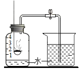
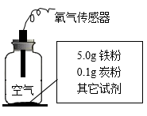

2021年北京市中考化学真题 · 选择题 第21、22、23、24、25题
用MgCl2溶液喷洒路面可融雪、防尘。20℃时，按下表数据配制溶液，回答问题。
序号 | ① | ② | ③ | ④ |
MgCl2的质量/g | 30 | 40 | 50 | 60 |
水 质量/g 质量/g | 100 | 100 | 100 | 100 |
（已知：20℃时，MgCl2的溶解度为54.6g）
21. 所得溶液中，溶质与溶剂的质量比为1：2的是
A. ①B. ②C. ③D. ④
22. ①中溶质的质量分数约为
A. 23%B. 30%C. 35%D. 43%
23. 所得溶液中，属于饱和溶液的是
A. ①B. ②C. ③D. ④
24. 用下图装置可验证空气中O2的含量。下列现象能表明O2含量的是

A. 集气瓶中产生大量白烟B. 红磷燃烧一段时间后熄灭
C. 烧杯中的水倒吸进入集气瓶D. 集气瓶中水面最终上升至1处
25. 实验研究铁锈蚀影响因素，记录如下、下列分析不正确的是
实验装置 | 序号 | 其他试剂 | 100s时O2的含量 |
 | ① | 干燥剂 | 21% |
② | 10滴水 | 15% |
③ | 10滴水和1.0g食盐 | 8% |
A. ②③中O2含量减少表明铁已锈蚀B. ①②证明水对铁锈蚀有影响
C. ②③证明食盐能加快铁锈蚀D. ①②③证明炭粉对铁锈蚀有影响